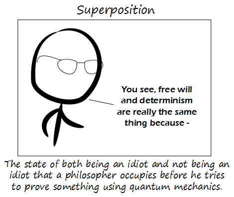

Comic JK 896
When I Feel Like It
⇤
<
?
>
⇥

⇤
<
?
>
⇥
Forum
.
RSS
.
Digg
.
Facebook
.
Reddit
.
Twitter
.
Stumbleupon
Enter your thoughts on number 896 here. Please, no spamming, trolling, phreaking, or superposition thereof. >BUY VI4GR4~~so many pathetic virgin nerd losers here, it's almost sad~bit.ly/fDI9at >> Pathetic virgins don't need Viagra, they just need your mother. >>>why the assumption "liking intellectual humour" == "pathetic virgin nerd loser" ? get turned down by a physics student and harboured resentment ever since... ? >>>> The humour here isn't intelligent. >>>>>you say that on today's cartoon, which requires a basic knowledge of quantum theory... which I suggest is several levels above mainstream media offerings... >>>>>> Being aware of facts from textbooks does not equate to intelligence. >>>>>> It doesn't require any more than popular stuff about QM, since quotes about even physicists not getting QM are widespread, which is why a philosopher is in <ph|{idiot,!idiot}> >>>>>>>I beg to differ... the person who seeks out - and returns to - something like comicJK or xkcd is clearly seeking a different form of entertainment than someone who only encounters a QM misquote on a soap opera... >>>>>>>>I prefer comicJK because there are some I can't understand and curiosity is the best way to learn. Whoa whoa whoa. Every time I try to pretend to be trolling the same. I try to make it as exaggerate and obvious as I can, so as to make it clear that I'm doing it on purpose (but still "touch that spot"). Then I come back and find half a dozen responses. Can one make money with that? > Some people just don't understand humour or sarcasm at all, and sometimes also have zero self humility. We generally refer to these people as "autistic". >>or maybe the attempted "humour" too accurately mirrors the "me like being ignorant" attitude found in too many places already... or the seemingly-common creed of: "be insulting and if anyone protests at you being an a***hole, just smugly claim *they* have no sense of humour..." >>> When you don't like a comment because you have no sense of humour and no self humility, the most mature thing to do is delete it. (6th time you've proven yourself to have no sense of humour and no self humility the way). >>>>if a person deletes comments and *they* think they are being "satirical" in doing so, but *you* think it's not funny... does your complaint imply *you* have no sense of humour or self-humility... ? >>>>> (yes) >>> Also, ignorant statements don't necessarily come from ignorant people - i.e. satire. >>>> Satire requires more context to be effective. >> Hey, who deleted the link? I wanted some of that! >>> Reposted, but changed to an indirect page to prevent earrape. Your mother had a super position last night. so if my position is 'standing' is my super position 'standing with hands on hips and cape flying in breeze' ? > Only if you're super posed. C'mon, no jokes yet about your mom in super positions? > Your mother thinks she has free will but deterministically sucks my dick when I give her five bucks. >> Article in the paper this morning indicated a brothel in Michigan has a going rate of a burger and fries... >>> A burger and fries has more inherent value than US dollars. >>>> A burger and fries has more inherent value than the loyalty of an army of a million men. Which is more valuable? >>>>>well, with a loyal army of a million, I can order them to get me a burger and fries... if I liked burger and fries... which I don't... though, come to think of it, I've never tried burger and fries... but the point still stands... mainly because with a million men, there's no room to sit down... --I believe the anonymous nature of this comment box needs to end. An actual discussion forum would remove the total freedom/anonymity that trolls have to post lewdness. Then, perhaps we could get back to actually having good and genuinely funny discussions. Throwing "your mom", "vagina", etc around does not instantly = funny. > .... munch munch munch..... Whee he heeeeeeee!!!!!!!! >>So rather then let the few have fun, you will make a forum that will die, allowing none to have fun? --> Must be a Neocon >>>Have you noticed that the comics have little to do with "your mom", etc, etc, etc. >>>> They have everything to do with your mother. You just miss the hidden meanings. If the few of you want to have that kind of fun, go find that kind of comic so that the majority of this comics readers can have fun (of course, I will be the first to admit that almost none of us, barring the website admin(s), really have any idea as to how many people use the comment box... so I think both of our statements on quantities of people that will be effected need a [citation needed] flag). >>>>I think, as a joke, the admin should put in a test for "your mother" and variants on a certain comic, and fake IP ban the ones that post it. As a joke. Because it would be hilarious. >>>>> Right - because blocking IPs for any reason is a brilliant idea with no possible negative consequences. >>>>>> Maddox used to block IPs with no possible negative consequences. >Another option would be to set up a parallel forum where we do have to log in and authenticate. >> So, you'd have one empty forum and one troll-filled forum. I don't think that's progress. >>>silly question time: wasn't a ComicJK forum started a while ago, and everyone stayed here regardless... or was I in an alternate reality at that stage ? ( notices the link to "Forum" for the first time, screams and hides under the table... ) >>>> It's still there, but no one uses it because it's cumbersome compare to this awesome box. >What? There's a forum? HOLY CRAP! >>newfag?